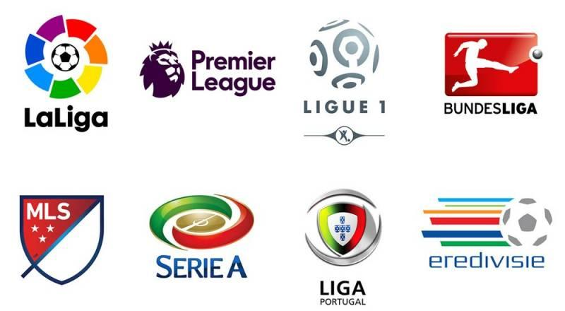

Here is a short description about some of the popular football clubs in Sri Lanka:
Colombo FC - Founded in 2008, Colombo FC is one of the most successful clubs in Sri Lanka.
They have won several domestic titles,including the Sri Lanka Football Premier League.
Renown SC - Founded in 2003, Renown SC is another successful club in Sri Lanka.
They have also won multiple domestic titles and have a strong youth development program.
Blue Star SC - Founded in 1944, Blue Star SC is one of the oldest football clubs in Sri Lanka.
They have a rich history and have won several domestic titles in the past.
Saunders SC - Founded in 1952, Saunders SC is a well-established football club in Sri Lanka.
They have a strong fan base and have won several domestic titles.
Ratnam SC - Founded in 1950, Ratnam SC is another popular football club in Sri Lanka.
They have won multiple domestic titles and have a strong youth academy.
These clubs, along with others such as Air Force SC, Army SC, Navy SC, New Youngs FC and Upcountry Lions FC,
play a crucial role in promoting and developing football in Sri Lanka.
World football
World football, also known as soccer, is a popular sport played and watched by millions of people
worldwide.
It involves two teams of 11 players each, who compete to score goals by kicking a ball into the opposing
team's net.
The sport is governed by the Fédération Internationale de Football Association (FIFA) and is played at
both amateur and professional levels,
with major international tournaments such as the FIFA World Cup and UEFA Champions League attracting
huge global audiences.
Football has a rich history, with various regional styles and traditions influencing the way the game is
played around the world.
World Football Leagues

There are numerous football leagues around the world, but the most popular ones are the top-tier leagues
in Europe, including:
English Premier League (England)
La Liga (Spain)
Bundesliga (Germany)
Serie A (Italy)
Ligue 1 (France)
These leagues consist of 20 teams that play each other twice (home and away) over the course of a
season,
usually from August to May. The team with the most points at the end of the season is crowned the league
champion.
The top teams in each league also qualify for continental competitions such as the UEFA Champions League
and the UEFA Europa League.
Other notable football leagues around the world include the Brazilian Serie A, the Argentine Primera
Division,
the Mexican Liga MX, the Chinese Super League, and the Major League Soccer (MLS) in the United States
and Canada.